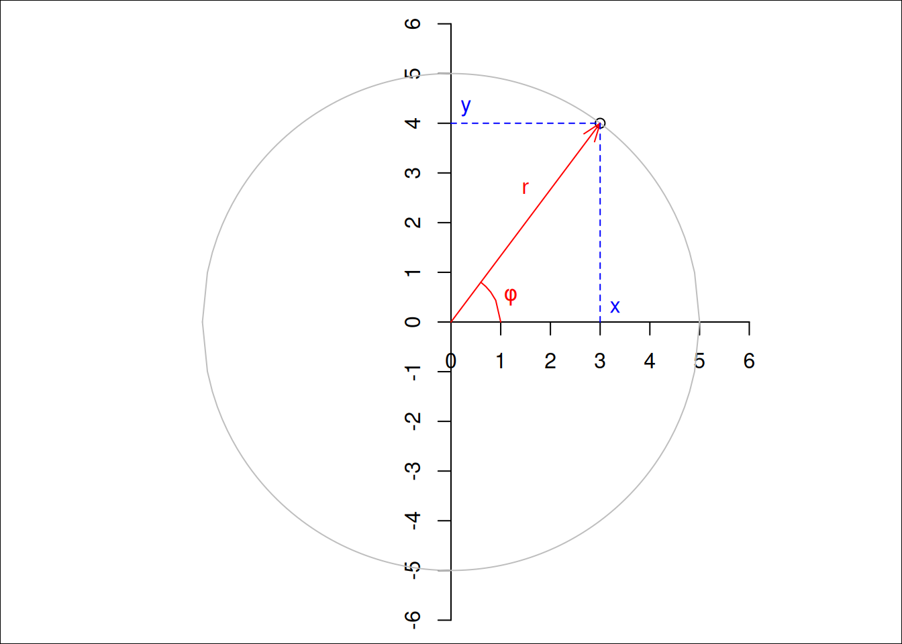
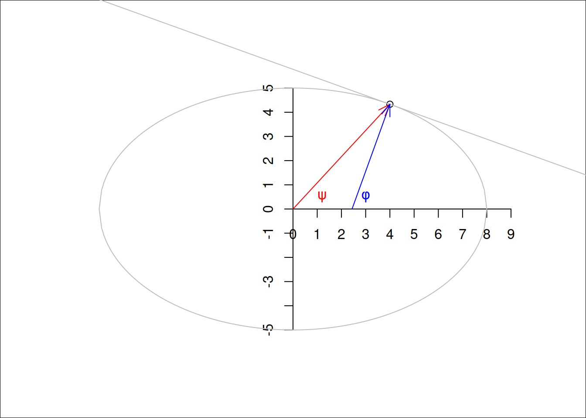

“Data are not just numbers, they are numbers with a context”; “In data analysis, context provides meaning” (Cobb and Moore 1997)
Before we can try to understand geometries like points, lines, polygons, coverage and grids, it is useful to review coordinate systems so that we have an idea what exactly coordinates of a point reflect. For spatial data, the location of observations are characterised by coordinates, and coordinates are defined in a coordinate system. Different coordinate systems can be used for this, and the most important difference is whether coordinates are defined over a 2 dimensional or 3 dimensional space referenced to orthogonal axes (Cartesian coordinates), or using distance and directions (polar coordinates, spherical and ellipsoidal coordinates). Besides a location of observation, all observations are associated with time of observation, and so time coordinate systems are also briefly discussed. First we will briefly review quantities, to learn what units and datum are.
2.1 Quantities, units, datum
The VIM (“International Vocabulary of Metrology”, BIPM et al. (2012)) defines a quantity as a “property of a phenomenon, body, or substance, where the property has a magnitude that can be expressed as a number and a reference”, where “[a] reference can be a measurement unit, a measurement procedure, a reference material, or a combination of such.” Although one could argue about whether all data is constituted of quantities, there is no need to argue that proper data handling requires that numbers (or symbols) are accompanied by information on what they mean, in particular what they refer to.
A measurement system consists of base units for base quantities, and derived units for derived quantities. For instance, the SI system of units (Bureau International des Poids et Mesures 2006) consists of seven base units: length (metre, m), mass (kilogram, kg), time (second, s), electric current (ampere, A), thermodynamic temperature (Kelvin, K), amount of substance (mole, mol), and luminous intensity (candela, cd). Derived units are composed of products of integer powers of base units; examples are speed (\(\mbox{m}~\mbox{s}^{-1}\)), density (\(\mbox{kg}~\mbox{m}^{-3}\)) and area (\(\mbox{m}^2\)).
The special case of unitless measures can refer to either cases where units cancel out (for instance mass fraction: kg/kg, or angle measured in rad: m/m) or to cases where objects or events were counted (such as “5 apples”). Adding an angle to a count of apples would not make sense; adding 5 apples to 3 oranges may make sense if the result is reinterpreted in terms of a superclass, in this case as pieces of fruit. Many data variables have units that are not expressible as SI base units or derived units. Hand (2004) discusses many such measurement scales, including those used to measure variables like intelligence in social sciences, in the context of measurement units.
For many quantities, the natural origin of values is zero. This works for amounts, where differences between amounts result in meaningful negative values. For locations and times, differences have a natural zero interpretation: distance and duration. Absolute location (position) and time need a fixed origin, from which we can meaningfully measure other absolute space time points: we call this a datum. For space, a datum involves more than one dimension. The combination of a datum and a measurement unit (scale) is a reference system.
We will now elaborate how spatial locations can be expressed as either ellipsoidal or Cartesian coordinates. The next sections will deal with temporal and spatial reference systems, and how they are handled in R.
2.2 Ellipsoidal coordinates
Code
par(mar =rep(0,4))plot(3, 4, xlim =c(-6,6), ylim =c(-6,6), asp =1)axis(1, pos =0, at =0:6)axis(2, pos =0, at =-6:6)xd <-seq(-5, 5, by = .1)lines(xd, sqrt(25- xd^2), col ='grey')lines(xd, -sqrt(25- xd^2), col ='grey')arrows(0, 0, 3, 4, col ='red', length = .15, angle =20)text(1.5, 2.7, label ="r", col ='red')xd <-seq(3/5, 1, by = .1)lines(xd, sqrt(1- xd^2), col ='red')text(1.2, 0.5, label =parse(text ="phi"), col ='red')lines(c(3,3), c(0,4), lty =2, col ='blue')lines(c(0,3), c(4,4), lty =2, col ='blue')text(3.3, 0.3, label ="x", col ='blue')text(0.3, 4.3, label ="y", col ='blue')

Figure 2.1: Two-dimensional polar (red) and Cartesian (blue) coordinates
Figure 2.1 shows both polar and Cartesian coordinates for a two-dimensional situation. In Cartesian coordinates, the point shown is \((x,y) = (3,4)\), for polar coordinates it is \((r,\phi) = (5, \mbox{arctan}(4/3))\), where \(\mbox{arctan}(4/3)\) is approximately \(0.93\) radians, or \(53^{\circ}\). Note that \(x\), \(y\) and \(r\) all have length units, where \(\phi\) is an angle (a unitless length/length ratio). Converting back and forth between Cartesian and polar coordinates is trivial, as \[x = r~\mbox{cos} \phi,\ \ \ y = r~\mbox{sin} \phi, \ \mbox{and}\]\[r = \sqrt{x^2 + y^2}, \ \ \ \phi = \mbox{atan2}(y, x)\] where \(\mbox{atan2}\) is used in favour of \(\mbox{atan}(y/x)\) to take care of the right quadrant.
Spherical or ellipsoidal coordinates
In three dimensions, where Cartesian coordinates are expressed as \((x,y,z)\), spherical coordinates are the three-dimensional equivalent of polar coordinates and can be expressed as \((r,\lambda,\phi)\), where:
\(r\) is the radius of the sphere,
\(\lambda\) is the longitude, measured in the \((x,y)\) plane counter-clockwise from positive \(x\), and
\(\phi\) is the latitude, the angle between the vector and the \((x,y)\) plane.
Figure 2.2 illustrates Cartesian geocentric and ellipsoidal coordinates.
Figure 2.2: Cartesian geocentric coordinates (left) measure three distances, ellipsoidal coordinates (right) measure two angles, and possibly an ellipsoidal height
\(\lambda\) typically varies between \(-180^{\circ}\) and \(180^{\circ}\) (or alternatively from \(0^{\circ}\) to \(360^{\circ}\)), \(\phi\) from \(-90^{\circ}\) to \(90^{\circ}\). When we are only interested in points on a sphere with given radius, we can drop \(r\): \((\lambda,\phi)\) now suffice to identify any point.
It should be noted that this is just a definition, one could for instance also choose to measure polar angle, the angle between the vector and \(z\), instead of latitude. There is also a long tradition of specifying points as \((\phi,\lambda)\) but throughout this book we will stick to longitude-latitude, \((\lambda,\phi)\). The point denoted in Figure 2.2 has \((\lambda,\phi)\) or ellipsoidal coordinates with angular values
Code
p <-st_as_sfc("POINT(60 47)", crs ='OGC:CRS84')p[[1]]
# POINT (60 47)
measured in degrees, and geocentric coordinates
Code
p <-st_as_sfc("POINT(60 47)", crs ='OGC:CRS84') |>st_transform("+proj=geocent")p[[1]]
# POINT Z (2178844 3773868 4641765)
measured in metres.
For points on an ellipse, there are two ways in which angle can be expressed (Figure 2.3): measured from the centre of the ellipse (\(\psi\)), or measured perpendicular to the tangent on the ellipse at the target point (\(\phi\)).
Code
par(mar =rep(0,4))x <-4y <-5/8*sqrt(48)plot(x, y, xlim =c(-6,6), ylim =c(-8,8), asp =1)axis(1, pos =0, at =0:9)axis(2, pos =0, at =-5:5)xd <-seq(-8, 8, by = .1)lines(xd, 5/8*sqrt(64- xd^2), col ='grey')lines(xd, 5/8*-sqrt(64- xd^2), col ='grey')arrows(0, 0, x, y, col ='red', length = .15, angle =20)b <- (x *25) / (-y *64)a <- y - x * babline(a, b, col ='grey')b <--1/bx0 <- x - y / barrows(x0, 0, x, y, col ='blue', length = .15, angle =20)text(1.2, 0.5, label =parse(text ="psi"), col ='red')text(3, 0.5, label =parse(text ="phi"), col ='blue')

Figure 2.3: Angles on an ellipse: geodetic (blue) and geocentric (red) latitude
The most commonly used parametric model for the Earth is an ellipsoid of revolution, an ellipsoid with two equal semi-axes (Iliffe and Lott 2008). In effect, this is a flattened sphere (or spheroid): the distance between the poles is (slightly: about 0.33%) smaller than the distance between two opposite points on the equator. Under this model, longitude is always measured along a circle (as in Figure 2.2), and latitude along an ellipse (as in Figure 2.3). If we think of Figure 2.3 as a cross section of the Earth passing through the poles, the geodetic latitude measure \(\phi\) is the one used when no further specification is given. The latitude measure \(\psi\) is called the geocentric latitude.
we can add altitude or elevation to longitude and latitude to define points that are above or below the ellipsoid, and obtain a three-dimensional space again. When defining altitude, we need to choose:
where zero altitude is: on the ellipsoid, or relative to the surface approximating mean sea level (the geoid)?
which direction is positive, and
which direction is “straight up”: perpendicular to the ellipsoid surface, or in the direction of gravity, perpendicular to the surface of the geoid?
All these choices may matter, depending on the application area and required measurement accuracies.
The shape of the Earth is not a perfect ellipsoid. As a consequence, several ellipsoids with different shape parameters and bound to the Earth in different ways are being used. Such ellipsoids are called datums, and are briefly discussed in Section 2.3, along with coordinate reference systems.
Projected coordinates, distances
Because paper maps and computer screens are much more abundant and practical than globes, when we look at spatial data we see it projected: drawn on a flat, two-dimensional surface. Computing the locations in a two-dimensional space means that we work with projected coordinates. Projecting ellipsoidal coordinates means that shapes, directions, areas, or even all three, are distorted (Iliffe and Lott 2008).
Distances between two points \(p_i\) and \(p_j\) in Cartesian coordinates are computed as Euclidean distances, in two dimensions by \[d_{ij} = \sqrt{(x_i-x_j)^2+(y_i-y_j)^2}\] with \(p_i = (x_i,y_i)\) and in three dimensions by \[d_{ij} = \sqrt{(x_i-x_j)^2+(y_i-y_j)^2+(z_i-z_j)^2}\] with \(p_i = (x_i,y_i,z_i).\) These distances represent the length of a straight line between two points \(i\) and \(j\).
For two points on a circle, the length of the arc of two points \(c_1 = (r,{\phi}_i)\) and \(c_2 = (r, \phi_2)\) is \[s_{ij}=r~|\phi_1-\phi_2| = r ~\theta\] with \(\theta\) the angle between \(\phi_1\) and \(\phi_2\) in radians. For very small values of \(\theta\), we will have \(s_{ij} \approx d_{ij}\), because a small arc segment is nearly straight.
For two points \(p_1 = (\lambda_1,\phi_1)\) and \(p_2 = (\lambda_2,\phi_2)\) on a sphere with radius \(r'\), the great circle distance is the arc length between \(p_1\) and \(p_2\) on the circle that passes through \(p_1\) and \(p_2\) and has the centre of the sphere as its centre, and is given by \(s_{12} = r ~ \theta_{12}\) with \[\theta_{12} = \arccos(\sin \phi_1 \cdot \sin \phi_2 + \cos \phi_1 \cdot \cos \phi_2 \cdot \cos(|\lambda_1-\lambda_2|))\] the angle between \(p_1\) and \(p_2\), in radians.
Arc distances between two points on a spheroid are more complicated to compute; a good discussion on the topic and an explanation of the method implemented in GeographicLib (part of PROJ) is given in Karney (2013).
To show that these distance measures actually give different values, we computed them for the distance Berlin - Paris. Here, gc_ refers to ellipsoidal and spherical great circle distances, str_ refers to straight line, Euclidean distances between Cartesian geocentric coordinates associated on the WGS84 ellipse and sphere:
Code
pts <-st_sfc(st_point(c(13.4050, 52.5200)), st_point(c(2.3522, 48.8566)), crs ='OGC:CRS84')s2_orig <-sf_use_s2(FALSE)d1 <-c(gc_ellipse =st_distance(pts)[1,2])sf_use_s2(TRUE)# or, without using s2, use st_distance(st_transform(pts, "+proj=cart +ellps=sphere"))d2 <-c(gc_sphere =st_distance(pts)[1,2])p <-st_transform(pts, "+proj=cart +ellps=WGS84")d3 <-c(str_ellipse = units::set_units(sqrt(sum(apply(do.call(cbind, p), 1, diff)^2)), m))p2 <-st_transform(pts, "+proj=cart +ellps=sphere")d4 <-c(str_sphere = units::set_units(sqrt(sum(apply(do.call(cbind, p2), 1, diff)^2)), m))res <-c(d1, d3, d2, d4) # note order# print as km, re-add names:sf_use_s2(s2_orig) # back to what it was before changingres |> units::set_units(km) |>setNames(names(res)) |>print(digits =5)
Two-dimensional and three-dimensional Euclidean spaces (\(R^2\) and \(R^3\)) are unbounded. Every line in this space has infinite length, and areas or volumes have no natural upper limit. In contrast, spaces defined on a circle (\(S^1\)) or sphere (\(S^2\)) define a bounded set: there may be infinitely many points but the length and area of the circle, and the radius, area and volume of a sphere are bounded.
This may sound trivial but leads to some interesting challenges when handling spatial data. A polygon on \(R^2\) has unambiguously an inside and an outside. On a sphere, \(S^2\), any polygon divides the sphere in two parts, and which of these two is to be considered inside and which outside is ambiguous and needs to be defined by the traversal direction. Chapter 4 will further discuss consequences when working with geometries on \(S^2\).
2.3 Coordinate reference systems
We follow Lott (2015) when defining the following concepts (italics indicate literal quoting):
a coordinate system is a set of mathematical rules for specifying how coordinates are to be assigned to points,
a datum is a parameter or set of parameters that define the position of the origin, the scale, and the orientation of a coordinate system,
a geodetic datum is a datum describing the relationship of a two- or three-dimensional coordinate system to the Earth, and
a coordinate reference system is a coordinate system that is related to an object by a datum; for geodetic and vertical datums, the object will be the Earth.
A readable text that further explains these concepts is Iliffe and Lott (2008).
The Earth does not follow a regular shape. The topography of the Earth is of course known to vary strongly, but also the surface formed by constant gravity at mean sea level, the geoid, is irregular. A commonly used model that is fit to the geoid is an ellipsoid of revolution, which is an ellipse with two identical minor axes. Fitting such an ellipsoid to the Earth gives a datum. However, fitting it to different areas, or based on different sets of reference points gives different fits, and hence different datums: a datum can for instance be fixed to a particular tectonic plate (like the European Terrestrial Reference System 1989 (ETRS89)), others can be globally fit (like WGS84). More local fits lead to smaller approximation errors.
The definitions above imply that coordinates in degrees longitude and latitude only have a meaning and can only be interpreted unambiguously as Earth coordinates, when the datum they are associated with is given.
Note that for projected data, the data that were projected are associated with a reference ellipsoid (datum). Going from one projection to another without changing datum is called coordinate conversion, and passes through the ellipsoidal coordinates associated with the datum involved. This process is lossless and invertible: the parameters and equations associated with a conversion are not empirical. Recomputing coordinates in a new datum is called coordinate transformation, and is approximate: because datums are a result of model fitting, transformations between datums are models too that have been fit; the equations involved are empirical, and multiple transformation paths, based on different model fits and associated with different accuracies, are possible.
Plate tectonics imply that within a global datum, fixed objects may have coordinates that change over time, and that transformations from one datum to another may be time-dependent. Earthquakes are a cause of more local and sudden changes in coordinates. Local datums may be fixed to tectonic plates (such as ETRS89), or may be dynamic.
2.4 PROJ and mapping accuracy
Very few living people active in open source geospatial software can remember the time before PROJ. PROJ (Evenden 1990) started in the 1970s as a Fortran project, and was released in 1985 as a C library for cartographic projections. It came with command line tools for direct and inverse projections, and could be linked to software to let it support (re)projection directly. Originally, datums were considered implicit, and no datum transformations were allowed.
In the early 2000s, PROJ was known as PROJ.4, after its never-changing major version number. Amongst others motivated by the rise of GPS, the need for datum transformations increased and PROJ.4 was extended with rudimentary datum support. PROJ definitions for coordinate reference systems would look like this:
+proj=utm +zone=33 +datum=WGS84 +units=m +no_defs
where key=value pairs are preceded by a + and separated by a space. This form came to be known as “PROJ.4 string”, since the PROJ project stayed at version 4.x for several decades. Other datums would come with fields like:
indicating another ellipse, as well as the seven (or three) parameters for transforming from this ellipse to WGS84 (the “World Geodetic System 1984” global datum once popularised by GPS), effectively defining the datum in terms of a transformation to WGS84.
Along with PROJ.4 came a set of databases with known (registered) projections, from which the best known is the European Petroleum Survey Group (EPSG) registry. National mapping agencies would provide (and update over time) their best guesses of +towgs84= parameters for national coordinate reference systems, and distribute through the EPSG registry, which was part of PROJ distributions. For some transformations, datum grids were available and distributed as part of PROJ.4: such grids are raster maps that provide for every location pre-computed values for the shift in longitude and latitude, or elevation, for a particular datum transformation.
In PROJ.4, every coordinate transformation had to go through a conversion to and from WGS84; even reprojecting data associated with a datum different from WGS84 had to go through a transformation to and from WGS84. The associated errors of up to 100 m were acceptable for mapping purposes for not too small areas, but some applications need higher accuracy transformations. Examples include precision agriculture, planning flights of UAV’s, or object tracking.
In 2018, after a successful “GDAL Coordinate System Barn Raising” initiative, a number of companies profiting from the open source geospatial software stack supported the development of a more modern, mature coordinate transformation system in PROJ. Over a few years, PROJ.4 evolved through versions 5, 6, 7, 8 and 9 and was hence renamed into PROJ (or PR\(\phi\)J).
The most notable changes include:
although PROJ.4 strings can still be used to initialise certain coordinate reference systems, they are no longer sufficient to represent all of them; a new format, WKT-2 (described in next section) replaces it
WGS84 as a hub datum is dropped: coordinate transformations no longer need to go through a particular datum
multiple conversion or transformation paths (so-called pipelines) to go from CRS A to CRS B are possible, and can be reported along with the associated accuracy; PROJ will by default use the most accurate one but user control is possible
transformation pipelines can chain an arbitrary number of elementary transformation operations, including swapping of axes and unit transformations
datum grids, of which there are now many more, are no longer distributed with the library but are accessible from a content delivery network (CDN); PROJ allows enabling and disabling network access to these grids and only downloads the section(s) of the grid actually needed, storing it in a cache on the user’s machine for future use
coordinate transformations receive support for epochs, time-dependent transformations (and hence: four-dimensional coordinates, including the source and target time)
the set of files with registered coordinate reference systems is handled in an SQLite database
instead of always handling axis order (longitude, latitude), when the authority defines differently this is now obeyed (but see Section 2.5 and Section 7.7.6)
All these points sound like massive improvements, and accuracies of transformation can be below 1 metre. An interesting point is the last: Where we could safely assume for many decades that spatial data with ellipsoidal coordinates would have axis order (longitude, latitude), this is no longer the case. We will see in Section 7.7.6 how to deal with this.
Figure 2.5: UK vertical datum grid, from ETRS89 (EPSG:4937) to ODN height (EPSG:5701), units m
Examples of a horizontal datum grids, downloaded from cdn.proj.org, are shown in Figure 2.4 and for a vertical datum grid in Figure 2.5. Datum grids may carry per-pixel accuracy values.
2.5 WKT-2
Lott (2015) describes a standard for encoding coordinate reference systems, as well as transformations between them using well-known text; the standard (and format) is referred to informally as WKT-2. As mentioned above, GDAL and PROJ fully support this encoding. An example of WKT-2 for CRS EPSG:4326 is:
GEOGCRS["WGS 84",
ENSEMBLE["World Geodetic System 1984 ensemble",
MEMBER["World Geodetic System 1984 (Transit)"],
MEMBER["World Geodetic System 1984 (G730)"],
MEMBER["World Geodetic System 1984 (G873)"],
MEMBER["World Geodetic System 1984 (G1150)"],
MEMBER["World Geodetic System 1984 (G1674)"],
MEMBER["World Geodetic System 1984 (G1762)"],
MEMBER["World Geodetic System 1984 (G2139)"],
ELLIPSOID["WGS 84",6378137,298.257223563,
LENGTHUNIT["metre",1]],
ENSEMBLEACCURACY[2.0]],
PRIMEM["Greenwich",0,
ANGLEUNIT["degree",0.0174532925199433]],
CS[ellipsoidal,2],
AXIS["geodetic latitude (Lat)",north,
ORDER[1],
ANGLEUNIT["degree",0.0174532925199433]],
AXIS["geodetic longitude (Lon)",east,
ORDER[2],
ANGLEUNIT["degree",0.0174532925199433]],
USAGE[
SCOPE["Horizontal component of 3D system."],
AREA["World."],
BBOX[-90,-180,90,180]],
ID["EPSG",4326]]
This shows a coordinate system with the axis order latitude, longitude, although in most practical cases the axis order used is longitude, latitude. The ensemble of WGS84 ellipsoids listed represents its various updates over time. Ambiguity about which of these ensemble members a particular dataset should use leads to an uncertainty of several meters. The coordinate reference system OGC:CRS84 disambiguates the axis order and explicitly states it to be longitude, latitude, and is the recommended alternative to WGS84 datasets using this axis order. It does not disambiguate the datum ensemble problem.
A longer introduction on the history and recent changes in PROJ is given in Bivand (2020), building upon the work of Knudsen and Evers (2017) and Evers and Knudsen (2017).
2.6 Exercises
Try to solve the following exercises with R (without loading packages); try to use functions where appropriate:
list three geographic measures that do not have a natural zero origin
convert the \((x,y)\) points \((10,2)\), \((-10,-2)\), \((10,-2)\), and \((0,10)\) to polar coordinates
convert the polar \((r,\phi)\) points \((10,45^{\circ})\), \((0,100^{\circ})\), and \((5,359^{\circ})\) to Cartesian coordinates
assuming the Earth is a sphere with a radius of 6371 km, compute for \((\lambda,\phi)\) points the great circle distance between \((10,10)\) and \((11,10)\), between \((10,80)\) and \((11,80)\), between \((10,10)\) and \((10,11)\), and between \((10,80)\) and \((10,81)\) (units: degree). What are the distance units?
BIPM, IEC, ILAC IFCC, IUPAP IUPAC, and OIML ISO. 2012. “The International Vocabulary of Metrology–Basic and General Concepts and Associated Terms (VIM), 3rd Edn. JCGM 200: 2012.”JCGM (Joint Committee for Guides in Metrology). https://www.bipm.org/en/publications/guides/.
Cobb, George W., and David S. Moore. 1997. “Mathematics, Statistics and Teaching.”The American Mathematical Monthly 104: 801–23. https://www.jstor.org/stable/2975286.
# Coordinates {#sec-cs}"_Data are not just numbers, they are numbers with a context_";"_In data analysis, context provides meaning_" [@cobbmoore]Before we can try to understand geometries like points, lines,polygons, coverage and grids, it is useful to review coordinatesystems so that we have an idea what exactly coordinates of apoint reflect. For spatial data, the location of observationsare characterised by coordinates, and coordinates are defined ina coordinate system. Different coordinate systems can be used forthis, and the most important difference is whether coordinates aredefined over a 2 dimensional or 3 dimensional space referencedto orthogonal axes (Cartesian coordinates), or using distanceand directions (polar coordinates, spherical and ellipsoidalcoordinates). Besides a location of observation, all observationsare associated with time of observation, and so time coordinatesystems are also briefly discussed. First we will briefly review_quantities_, to learn what units and datum are.## Quantities, units, datum {#sec-units}\index{quantities}\index{units}\index{measurement units}The VIM ("International Vocabulary of Metrology", @vim)defines a _quantity_ as a "property of a phenomenon, body, orsubstance, where the property has a magnitude that can be expressedas a number and a reference", where "[a] reference can be a measurementunit, a measurement procedure, a reference material, or a combinationof such." Although one could argue about whether all data isconstituted of quantities, there is no need to argue that properdata handling requires that numbers (or symbols) are accompaniedby information on what they mean, in particular what they refer to.A measurement system consists of _base units_ for base quantities, and_derived units_ for derived quantities. For instance, the SI systemof units [@SI] consists of seven base units: length (metre,m), mass (kilogram, kg), time (second, s), electric current(ampere, A), thermodynamic temperature (Kelvin, K), amount ofsubstance (mole, mol), and luminous intensity (candela, cd).Derived units are composed of products of integer powers of baseunits; examples are speed ($\mbox{m}~\mbox{s}^{-1}$), density($\mbox{kg}~\mbox{m}^{-3}$) and area ($\mbox{m}^2$).The special case of unitless measures can refer to either caseswhere units cancel out (for instance mass fraction: kg/kg, or angle measuredin rad: m/m) or to cases where objects or events were counted(such as "5 apples"). Adding an angle to a count of apples would notmake sense; adding 5 apples to 3 oranges may make sense if theresult is reinterpreted in terms of a superclass, in this case as _pieces of fruit_.Many data variables have units that are not expressible as SI baseunits or derived units. @hand discusses many such measurement scales,including those used to measure variables like intelligence insocial sciences, in the context of measurement units.For many quantities, the natural origin of values is zero. Thisworks for amounts, where differences between amounts result inmeaningful negative values. For locations and times, differenceshave a natural zero interpretation: distance and duration. Absolutelocation (position) and time need a fixed origin, from which wecan meaningfully measure other absolute space time points: wecall this **a datum**.For space, a datum involves more than one dimension. The combinationof a datum and a measurement unit (scale) is a _reference system_.\index{datum}We will now elaborate how spatial locations can be expressed aseither ellipsoidal or Cartesian coordinates. The next sections willdeal with temporal and spatial reference systems, and how they arehandled in R.## Ellipsoidal coordinates```{r fig-polar, echo=!knitr::is_latex_output() }#| out.width: 60%#| fig.cap: "Two-dimensional polar (red) and Cartesian (blue) coordinates"#| code-fold: truepar(mar =rep(0,4))plot(3, 4, xlim =c(-6,6), ylim =c(-6,6), asp =1)axis(1, pos =0, at =0:6)axis(2, pos =0, at =-6:6)xd <-seq(-5, 5, by = .1)lines(xd, sqrt(25- xd^2), col ='grey')lines(xd, -sqrt(25- xd^2), col ='grey')arrows(0, 0, 3, 4, col ='red', length = .15, angle =20)text(1.5, 2.7, label ="r", col ='red')xd <-seq(3/5, 1, by = .1)lines(xd, sqrt(1- xd^2), col ='red')text(1.2, 0.5, label =parse(text ="phi"), col ='red')lines(c(3,3), c(0,4), lty =2, col ='blue')lines(c(0,3), c(4,4), lty =2, col ='blue')text(3.3, 0.3, label ="x", col ='blue')text(0.3, 4.3, label ="y", col ='blue')```@fig-polar shows both polar and Cartesian coordinatesfor a two-dimensional situation. In Cartesian coordinates,the point shown is $(x,y) = (3,4)$, for polar coordinates it is$(r,\phi) = (5, \mbox{arctan}(4/3))$, where $\mbox{arctan}(4/3)$ isapproximately $0.93$ radians, or $53^{\circ}$. Note that $x$, $y$and $r$ all have length units, where $\phi$ is an angle (a unitlesslength/length ratio). Converting back and forth between Cartesianand polar coordinates is trivial, as$$x = r~\mbox{cos} \phi,\ \ \ y = r~\mbox{sin} \phi, \ \mbox{and}$$$$r = \sqrt{x^2 + y^2}, \ \ \ \phi = \mbox{atan2}(y, x)$$where $\mbox{atan2}$ is used in favour of $\mbox{atan}(y/x)$ to take careof the right quadrant.### Spherical or ellipsoidal coordinates\index{ellipsoidal coordinates}\index{coordinates!ellipsoidal}\index{coordinates!geocentric}\index{coordinates!Cartesian}In three dimensions, where Cartesian coordinates are expressed as$(x,y,z)$, spherical coordinates are the three-dimensional equivalentof polar coordinates and can be expressed as $(r,\lambda,\phi)$, where:* $r$ is the radius of the sphere,* $\lambda$ is the longitude, measured in the $(x,y)$ plane counter-clockwise from positive $x$, and* $\phi$ is the latitude, the angle between the vector and the $(x,y)$ plane.@fig-sphere illustrates Cartesian geocentric andellipsoidal coordinates.```{r fig-sphere, echo=!knitr::is_latex_output()}#| fig.cap: "Cartesian geocentric coordinates (left) measure three distances, ellipsoidal coordinates (right) measure two angles, and possibly an ellipsoidal height"#| code-fold: truelibrary(sf) |>suppressPackageStartupMessages()e <-cbind(-90:90,0) # equatorf1 <-rbind(cbind(0, -90:90)) # 0/antimerid.f2 <-rbind(cbind(90, -90:90), cbind(270, 90:-90))# +/- 90eq <-st_sfc(st_linestring(e), st_linestring(f1), st_linestring(f2), crs='OGC:CRS84')geoc <-st_transform(eq, "+proj=geocent")cc <-rbind(geoc[[1]], NA, geoc[[2]], NA, geoc[[3]])from3d <-function(x, offset, maxz, minz) { x = x[,c(2,3,1)] + offset # move to y right, x up, z backw x[,2] = x[,2] - maxz # shift y to left d = maxz z = x[,3] - minz + offset x[,1] = x[,1] * (d/z) x[,2] = x[,2] * (d/z) x[,1:2]}maxz <-max(cc[,3], na.rm =TRUE)minz <-min(cc[,3], na.rm =TRUE)offset <-3e7circ <-from3d(cc, offset, maxz, minz)mx <-max(cc, na.rm =TRUE) *1.1x <-rbind(c(0, 0, 0), c(mx, 0, 0))y <-rbind(c(0, 0, 0), c(0, mx, 0))z <-rbind(c(0, 0, 0), c(0, 0, mx))ll <-rbind(x, NA, y, NA, z)l0 <-from3d(ll, offset, maxz, minz)mx <-max(cc, na.rm =TRUE) *1.2x <-rbind(c(0, 0, 0), c(mx, 0, 0))y <-rbind(c(0, 0, 0), c(0, mx, 0))z <-rbind(c(0, 0, 0), c(0, 0, mx))ll <-rbind(x, NA, y, NA, z)l <-from3d(ll, offset, maxz, minz)par(mfrow =c(1, 2))par(mar =rep(0,4))plot.new()plot.window(xlim =c(min(circ[,1],na.rm =TRUE), 3607103*1.02), ylim =c(min(circ[,2],na.rm =TRUE), 2873898*1.1), asp =1)lines(circ)lines(l0)text(l[c(2,5,8),], labels =c("x", "y", "z"), col ='red')# add POINT(60 47)p <-st_as_sfc("POINT(60 47)", crs ='OGC:CRS84') |>st_transform("+proj=geocent")p <- p[[1]]pts <-rbind(c(0,0,0), c(p[1],0,0), c(p[1],p[2],0), c(p[1],p[2],p[2]))ptsl <-from3d(pts, offset, maxz, minz)lines(ptsl, col ='blue', lty =2, lwd =2)points(ptsl[4,1], ptsl[4,2], col ='blue', cex =1, pch =16)plot.new()plot.window(xlim =c(min(circ[,1],na.rm =TRUE), 3607103*1.02), ylim =c(min(circ[,2],na.rm =TRUE), 2873898*1.1), asp =1)lines(circ)p <-st_as_sfc("POINT(60 47)", crs ='OGC:CRS84') |>st_transform("+proj=geocent")p <- p[[1]]pts <-rbind(c(0,0,0), c(p[1],p[2],p[3]))pt <-from3d(pts, offset, maxz, minz)lines(pt)points(pt[2,1], pt[2,2], col ='blue', cex =1, pch =16)p0 <-st_as_sfc("POINT(60 0)", crs ='OGC:CRS84') |>st_transform("+proj=geocent")p0 <- p0[[1]]pts <-rbind(c(0,0,0), c(p0[1],p0[2],p0[3]))pt <-from3d(pts, offset, maxz, minz)lines(pt)p0 <-st_as_sfc("POINT(0 0)", crs ='OGC:CRS84') |>st_transform("+proj=geocent")p0 <- p0[[1]]pts <-rbind(c(0,0,0), c(p0[1],p0[2],p0[3]))pt <-from3d(pts, offset, maxz, minz)lines(pt)p0 <-st_as_sfc("POINT(0 90)", crs ='OGC:CRS84') |>st_transform("+proj=geocent")p0 <- p0[[1]]pts <-rbind(c(0,0,0), c(p0[1],p0[2],p0[3]))pt <-from3d(pts, offset, maxz, minz)lines(pt, lty =2)p0 <-st_as_sfc("POINT(90 0)", crs ='OGC:CRS84') |>st_transform("+proj=geocent")p0 <- p0[[1]]pts <-rbind(c(0,0,0), c(p0[1],p0[2],p0[3]))pt <-from3d(pts, offset, maxz, minz)lines(pt, lty =2)f1 <-rbind(cbind(0:60, 0))arc <-st_sfc(st_linestring(f1), crs='OGC:CRS84')geoc <-st_transform(arc, "+proj=geocent")cc <-rbind(geoc[[1]])circ <-from3d(cc, offset, maxz, minz)lines(circ, col ='red', lwd =2, lty =2)f1 <-rbind(cbind(60, 0:47))arc <-st_sfc(st_linestring(f1), crs='OGC:CRS84')geoc <-st_transform(arc, "+proj=geocent")cc <-rbind(geoc[[1]])circ <-from3d(cc, offset, maxz, minz)lines(circ, col ='blue', lwd =2, lty =2)text(pt[1,1]+100000, pt[1,2]+50000, labels =expression(phi), col ='blue') # lattext(pt[1,1]+20000, pt[1,2]-50000, labels =expression(lambda), col ='red') # lng```$\lambda$ typically varies between $-180^{\circ}$ and $180^{\circ}$(or alternatively from $0^{\circ}$ to $360^{\circ}$), $\phi$ from$-90^{\circ}$ to $90^{\circ}$. When we are only interested in points_on_ a sphere with given radius, we can drop $r$: $(\lambda,\phi)$now suffice to identify any point.\newpageIt should be noted that this is just _a_ definition, one could forinstance also choose to measure polar angle, the angle betweenthe vector and $z$, instead of latitude. There is also a longtradition of specifying points as $(\phi,\lambda)$ but throughoutthis book we will stick to longitude-latitude, $(\lambda,\phi)$.The point denoted in @fig-sphere has $(\lambda,\phi)$ or ellipsoidalcoordinates with angular values```{r echo=!knitr::is_latex_output()}#| code-fold: true#| collapse: falsep <-st_as_sfc("POINT(60 47)", crs ='OGC:CRS84')p[[1]]```measured in degrees, and geocentric coordinates```{r echo=!knitr::is_latex_output()}#| code-fold: true#| collapse: falsep <-st_as_sfc("POINT(60 47)", crs ='OGC:CRS84') |>st_transform("+proj=geocent")p[[1]]```measured in metres.\index{coordinates!units}For points on an ellipse, there are two ways in which angle can beexpressed (@fig-ellipse): measured from the centre of the ellipse($\psi$), or measured perpendicular to the tangent on the ellipseat the target point ($\phi$).```{r fig-ellipse, echo=!knitr::is_latex_output() }#| out.width: 60%#| fig.cap: "Angles on an ellipse: geodetic (blue) and geocentric (red) latitude"#| code-fold: truepar(mar =rep(0,4))x <-4y <-5/8*sqrt(48)plot(x, y, xlim =c(-6,6), ylim =c(-8,8), asp =1)axis(1, pos =0, at =0:9)axis(2, pos =0, at =-5:5)xd <-seq(-8, 8, by = .1)lines(xd, 5/8*sqrt(64- xd^2), col ='grey')lines(xd, 5/8*-sqrt(64- xd^2), col ='grey')arrows(0, 0, x, y, col ='red', length = .15, angle =20)b <- (x *25) / (-y *64)a <- y - x * babline(a, b, col ='grey')b <--1/bx0 <- x - y / barrows(x0, 0, x, y, col ='blue', length = .15, angle =20)text(1.2, 0.5, label =parse(text ="psi"), col ='red')text(3, 0.5, label =parse(text ="phi"), col ='blue')```The most commonly used parametric model for the Earth is _anellipsoid of revolution_, an ellipsoid with two equal semi-axes[@iliffelott]. In effect, this is a flattened sphere (or spheroid):the distance between the poles is (slightly: about 0.33%) smallerthan the distance between two opposite points on the equator. Underthis model, longitude is always measured along a circle (as in@fig-sphere), and latitude along an ellipse (as in@fig-ellipse). If wethink of @fig-ellipse as a cross section of the Earthpassing through the poles, the _geodetic_ latitude measure $\phi$is the one used when no further specification is given. The latitudemeasure $\psi$ is called the _geocentric latitude_.\index{latitude!geodetic}\index{latitude!geocentric}\index{longitude}\index{ellipsoid of revolution}\index{altitude}\index{altitude!direction}\index{coordinates!altitude}we can add _altitude_ or elevation to longitude and latitude todefine points that are above or below the ellipsoid, and obtaina three-dimensional space again. When defining altitude, we needto choose:* where zero altitude is: on the ellipsoid, or relative to the surface approximating mean sea level (the geoid)?* which direction is positive, and * which direction is "straight up": perpendicular to the ellipsoid surface,or in the direction of gravity, perpendicular to the surface of the geoid?All these choices may matter, depending on the application areaand required measurement accuracies.The shape of the Earth is not a perfect ellipsoid. As a consequence,several ellipsoids with different shape parameters and bound tothe Earth in different ways are being used. Such ellipsoids are called_datums_, and are briefly discussed in @sec-crs, alongwith _coordinate reference systems_.### Projected coordinates, distances {#sec-projections}Because paper maps and computer screens are much more abundantand practical than globes, when we look at spatialdata we see it _projected_: drawn on a flat, two-dimensionalsurface. Computing the locations in a two-dimensional space meansthat we work with _projected_ coordinates. Projecting ellipsoidalcoordinates means that shapes, directions, areas, or even all three,are distorted [@iliffelott].\index{coordinates!projected}\index{projection}\index{distance!straight line}Distances between two points $p_i$ and $p_j$ in Cartesian coordinates are computedas Euclidean distances, in two dimensions by$$d_{ij} = \sqrt{(x_i-x_j)^2+(y_i-y_j)^2}$$with $p_i = (x_i,y_i)$and in three dimensions by$$d_{ij} = \sqrt{(x_i-x_j)^2+(y_i-y_j)^2+(z_i-z_j)^2}$$with $p_i = (x_i,y_i,z_i).$These distances represent the length of a _straight_ line betweentwo points $i$ and $j$.For two points on a circle, the length of the arc of two points $c_1 = (r,{\phi}_i)$ and$c_2 = (r, \phi_2)$ is$$s_{ij}=r~|\phi_1-\phi_2| = r ~\theta$$with $\theta$ the angle between $\phi_1$ and $\phi_2$ in radians.For very small values of $\theta$, we will have $s_{ij} \approx d_{ij}$,because a small arc segment is nearly straight.\index{distance!great circle}For two points $p_1 = (\lambda_1,\phi_1)$ and $p_2 =(\lambda_2,\phi_2)$ on a sphere with radius $r'$, the _great circledistance_ is the arc length between $p_1$ and $p_2$ on the circlethat passes through $p_1$ and $p_2$ and has the centre of the sphere as its centre, andis given by $s_{12} = r ~ \theta_{12}$ with$$\theta_{12} = \arccos(\sin \phi_1 \cdot \sin \phi_2 + \cos \phi_1 \cdot \cos \phi_2 \cdot \cos(|\lambda_1-\lambda_2|))$$the angle between $p_1$ and $p_2$, in radians.Arc distances between two points on a spheroid are more complicatedto compute; a good discussion on the topic and an explanation ofthe method implemented in GeographicLib (part of PROJ) is givenin @karney2013algorithms.\index{distance!ellipsoidal}To show that these distance measures actually give differentvalues, we computed them for the distance Berlin - Paris. Here,`gc_` refers to ellipsoidal and spherical great circle distances,`str_` refers to straight line, Euclidean distances betweenCartesian geocentric coordinates associated on the WGS84 ellipseand sphere:```{r echo=!knitr::is_latex_output(), message=FALSE}#| code-fold: true#| collapse: falsepts <-st_sfc(st_point(c(13.4050, 52.5200)), st_point(c(2.3522, 48.8566)), crs ='OGC:CRS84')s2_orig <-sf_use_s2(FALSE)d1 <-c(gc_ellipse =st_distance(pts)[1,2])sf_use_s2(TRUE)# or, without using s2, use st_distance(st_transform(pts, "+proj=cart +ellps=sphere"))d2 <-c(gc_sphere =st_distance(pts)[1,2])p <-st_transform(pts, "+proj=cart +ellps=WGS84")d3 <-c(str_ellipse = units::set_units(sqrt(sum(apply(do.call(cbind, p), 1, diff)^2)), m))p2 <-st_transform(pts, "+proj=cart +ellps=sphere")d4 <-c(str_sphere = units::set_units(sqrt(sum(apply(do.call(cbind, p2), 1, diff)^2)), m))res <-c(d1, d3, d2, d4) # note order# print as km, re-add names:sf_use_s2(s2_orig) # back to what it was before changingres |> units::set_units(km) |>setNames(names(res)) |>print(digits =5)```### Bounded and unbounded spaces {#sec-bounded}\index{sphere}\index{space!bounded}\index{space!unbounded}Two-dimensional and three-dimensional Euclidean spaces ($R^2$ and$R^3$) are unbounded. Every line in this space has infinite length,and areas or volumes have no natural upper limit. In contrast,spaces defined on a circle ($S^1$) or sphere ($S^2$) define a boundedset: there may be infinitely many points but the length and areaof the circle, and the radius, area and volume of a sphere are bounded.This may sound trivial but leads to some interesting challengeswhen handling spatial data. A polygon on $R^2$ has unambiguously aninside and an outside. On a sphere, $S^2$, any polygon dividesthe sphere in two parts, and which of these two is to be consideredinside and which outside is ambiguous and needs to be definedby the traversal direction. @sec-spherical will further discussconsequences when working with geometries on $S^2$.\index{polygon!on the sphere}\index{polygon!inside, outside}## Coordinate reference systems {#sec-crs}\index{coordinate reference systems}We follow @lott2015 when defining the following concepts (italics indicate literal quoting):* a **coordinate system** is a _set of mathematical rules for specifying how coordinates are to be assigned to points_,* a **datum** is a _parameter or set of parameters that define the position of the origin, the scale, and the orientation of a coordinate system_, * a **geodetic datum** is a _datum describing the relationship of a two- or three-dimensional coordinate system to the Earth_, and* a **coordinate reference system** is a _coordinate system that is related to an object by a datum; for geodetic and vertical datums, the object will be the Earth._\index{coordinate system}\index{geodetic datum}A readable text that further explains these concepts is @iliffelott.The Earth does not follow a regular shape. The topography of theEarth is of course known to vary strongly, but also the surfaceformed by constant gravity at mean sea level, the geoid, isirregular. A commonly used model that is fit to the geoid is anellipsoid of revolution, which is an ellipse with two identicalminor axes. Fitting such an ellipsoid to the Earth gives a datum.However, fitting it to different areas, or based on different sets ofreference points gives different fits, and hence different datums:a datum can for instance be fixed to a particular tectonic plate(like the European Terrestrial Reference System 1989 (ETRS89)), others can be globally fit (like WGS84). More localfits lead to smaller approximation errors.\index{geoid}The definitions above imply that coordinates in degrees longitudeand latitude only have a meaning and can only be interpretedunambiguously as Earth coordinates, when the datum they areassociated with is given.Note that for projected data, the data that _were_ projectedare associated with a reference ellipsoid (datum). Going fromone projection to another _without_ changing datum is called_coordinate conversion_, and passes through the ellipsoidalcoordinates associated with the datum involved. This process islossless and invertible: the parameters and equations associatedwith a _conversion_ are not empirical. Recomputing coordinates in anew datum is called _coordinate transformation_, and is approximate:because datums are a result of model fitting, transformationsbetween datums are models too that have been fit; the equationsinvolved are empirical, and multiple transformation paths, basedon different model fits and associated with different accuracies,are possible.\index{coordinate!conversion}\index{coordinate!transformation}Plate tectonics imply that within a global datum, fixed objects mayhave coordinates that change over time, and that transformationsfrom one datum to another may be time-dependent. Earthquakes are acause of more local and sudden changes in coordinates. Local datumsmay be fixed to tectonic plates (such as ETRS89), or may be dynamic.\index{datum!dynamic}## PROJ and mapping accuracy {#sec-projlib}Very few living people active in open source geospatial softwarecan remember the time before PROJ. PROJ [@evenden:90] started in the1970s as a Fortran project, and was released in 1985 as a C libraryfor cartographic projections. It came with command line tools fordirect and inverse projections, and could be linked to softwareto let it support (re)projection directly. Originally, datums wereconsidered implicit, and no datum transformations were allowed.\index{PROJ}\index{PROJ!PROJ.4}\index{PROJ!proj4string}In the early 2000s, PROJ was known as PROJ.4, after its never-changingmajor version number. Amongst others motivated by the rise of GPS,the need for datum transformations increased and PROJ.4 was extendedwith rudimentary datum support. PROJ definitions for coordinatereference systems would look like this:```+proj=utm +zone=33 +datum=WGS84 +units=m +no_defs```where _key_=_value_ pairs are preceded by a `+` and separated bya space. This form came to be known as "PROJ.4 string", since thePROJ project stayed at version 4.x for several decades. Other datumswould come with fields like:```+ellps=bessel +towgs84=565.4,50.3,465.6,-0.399,0.344,-1.877,4.072```indicating another ellipse, as well as the seven (or three)parameters for transforming from this ellipse to WGS84 (the "WorldGeodetic System 1984" global datum once popularised by GPS),effectively defining the datum in terms of a transformation to WGS84.Along with PROJ.4 came a set of databases with known (registered)projections, from which the best known is the European Petroleum Survey Group (EPSG) registry.National mapping agencies would provide (and update over time)their best guesses of `+towgs84=` parameters for national coordinatereference systems, and distribute through the EPSG registry,which was part of PROJ distributions.For some transformations, _datum grids_ were available anddistributed as part of PROJ.4: such grids are raster maps that providefor every location pre-computed values for the shift in longitudeand latitude, or elevation, for a particular datum transformation.In PROJ.4, every coordinate transformation had to go through aconversion to and from WGS84; even reprojecting data associated witha datum different from WGS84 had to go through a transformation toand from WGS84. The associated errors of up to 100 m were acceptablefor mapping purposes for not too small areas, but some applications need higher accuracy transformations. Examples include precisionagriculture, planning flights of UAV's, or object tracking.In 2018, after a successful "GDAL Coordinate System Barn Raising"initiative, a number of companies profiting from the open sourcegeospatial software stack supported the development of a more modern,mature coordinate transformation system in PROJ. Over a few years,PROJ.4 evolved through versions 5, 6, 7, 8 and 9 and was hence renamedinto PROJ (or PR$\phi$J).\index{GDAL!barn raising}\index{GDAL!datum transformation}\index{PROJ!datum transformation}The most notable changes include:* although PROJ.4 strings can still be used to initialise certaincoordinate reference systems, they are no longer sufficient torepresent all of them; a new format, WKT-2 (described in next section)replaces it* WGS84 as a hub datum is dropped: coordinate transformations no longerneed to go through a particular datum* multiple conversion or transformation paths (so-called pipelines)to go from CRS A to CRS B are possible, and can be reported alongwith the associated accuracy; PROJ will by default use the most accurateone but user control is possible* transformation pipelines can chain an arbitrary number ofelementary transformation operations, including swapping of axesand unit transformations * datum grids, of which there are now _many_ more, are no longer distributedwith the library but are accessible from a content delivery network (CDN); PROJ allows enabling anddisabling network access to these grids and only downloads the section(s)of the grid actually needed, storing it in a cache on the user's machine for future use * coordinate transformations receive support for epochs, time-dependenttransformations (and hence: four-dimensional coordinates, including thesource and target time)* the set of files with registered coordinate reference systems is handledin an SQLite database* instead of always handling axis order (longitude, latitude),when the authority defines differently this is now obeyed (but see@sec-wkt2 and @sec-axisorder)\index{WKT-2}\index{PROJ!WKT-2}\index{projection!accuracy}All these points sound like massive improvements, and accuraciesof transformation can be below 1 metre. An interesting pointis the last: Where we could safely assume for many decades thatspatial data with ellipsoidal coordinates would have axis order(longitude, latitude), this is no longer the case. We will see in@sec-axisorder how to deal with this.\index{datum!grids}```{r fig-horizontalgrid, echo=!knitr::is_latex_output(), message = FALSE}#| out.width: 70%#| fig.cap: "UK horizontal datum grid, from datum OSGB 1936 (EPSG:4277) to datum ETRS89 (EPSG:4258); units arc-seconds"#| code-fold: truelibrary(stars)library(rnaturalearth)library(dplyr) |>suppressPackageStartupMessages()countries110 |>st_as_sf() |>filter(ADMIN =="United Kingdom") |>st_geometry() -> ukfilename ="data/uk_os_OSTN15_NTv2_OSGBtoETRS.tif"r <-if (file.exists(filename)) { r <-read_stars(filename) } else {read_stars("/vsicurl/https://cdn.proj.org/uk_os_OSTN15_NTv2_OSGBtoETRS.tif") }hook <-function() {plot(uk, border ="orange", col =NA, add =TRUE)}plot(r[,,,1:2], axes =TRUE, hook = hook, key.pos =4)``````{r fig-verticalgrid, echo=!knitr::is_latex_output(), message = FALSE}#| out.width: 70%#| fig.cap: "UK vertical datum grid, from ETRS89 (EPSG:4937) to ODN height (EPSG:5701), units m"#| code-fold: truefilename ="data/uk_os_OSGM15_GB.tif"h <-if (file.exists(filename)) {read_stars(filename) } else {read_stars("/vsicurl/https://cdn.proj.org/uk_os_OSGM15_GB.tif") } plot(h, axes =TRUE, reset =FALSE)plot(uk, border ="orange", col =NA, add =TRUE)```\index{coordinates!axis order}\index{axis order}Examples of a horizontal datum grids, downloaded from cdn.proj.org,are shown in @fig-horizontalgrid and for a verticaldatum grid in @fig-verticalgrid. Datum grids may carryper-pixel accuracy values.## WKT-2 {#sec-wkt2}@lott2015 describes a standard for encoding coordinate referencesystems, as well as transformations between them using _well-known text_; the standard (and format) is referred to informally asWKT-2. As mentioned above, GDAL and PROJ fully support this encoding.An example of WKT-2 for CRS `EPSG:4326` is:\index{coordinates!WKT-2}\index{WKT-2}```GEOGCRS["WGS 84", ENSEMBLE["World Geodetic System 1984 ensemble", MEMBER["World Geodetic System 1984 (Transit)"], MEMBER["World Geodetic System 1984 (G730)"], MEMBER["World Geodetic System 1984 (G873)"], MEMBER["World Geodetic System 1984 (G1150)"], MEMBER["World Geodetic System 1984 (G1674)"], MEMBER["World Geodetic System 1984 (G1762)"], MEMBER["World Geodetic System 1984 (G2139)"], ELLIPSOID["WGS 84",6378137,298.257223563, LENGTHUNIT["metre",1]], ENSEMBLEACCURACY[2.0]], PRIMEM["Greenwich",0, ANGLEUNIT["degree",0.0174532925199433]], CS[ellipsoidal,2], AXIS["geodetic latitude (Lat)",north, ORDER[1], ANGLEUNIT["degree",0.0174532925199433]], AXIS["geodetic longitude (Lon)",east, ORDER[2], ANGLEUNIT["degree",0.0174532925199433]], USAGE[ SCOPE["Horizontal component of 3D system."], AREA["World."], BBOX[-90,-180,90,180]], ID["EPSG",4326]]```This shows a coordinate system with the axis order _latitude,longitude_, although in most practical cases the axis order used is_longitude, latitude_. The _ensemble_ of WGS84 ellipsoids listedrepresents its various updates over time. Ambiguity about _which_of these ensemble members a particular dataset should use leads toan uncertainty of several meters. The coordinate reference system`OGC:CRS84` disambiguates the axis order and explicitly states itto be `longitude, latitude`, and is the recommended alternative toWGS84 datasets using this axis order. It does not disambiguatethe datum ensemble problem.\index{axis order!disambiguate}\index{WGS84}\index{OGC:CRS84}A longer introduction on the history and recent changes in PROJis given in @rogerCRS, building upon the work of @knudsen+evers17and @evers+knudsen17.## ExercisesTry to solve the following exercises with R (without loading packages); try to use functions where appropriate:1. list three _geographic_ measures that do not have a natural zero origin<!-- latitude, longitude, elevation -->2. convert the $(x,y)$ points $(10,2)$, $(-10,-2)$, $(10,-2)$, and $(0,10)$ to polar coordinates3. convert the polar $(r,\phi)$ points $(10,45^{\circ})$, $(0,100^{\circ})$, and $(5,359^{\circ})$ to Cartesian coordinates4. assuming the Earth is a sphere with a radius of 6371 km, compute for $(\lambda,\phi)$ points the great circle distance between $(10,10)$ and $(11,10)$, between $(10,80)$ and $(11,80)$, between $(10,10)$ and $(10,11)$, and between $(10,80)$ and $(10,81)$ (units: degree). What are the distance units?{{< include ga.qmd >}}